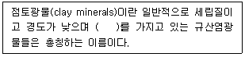
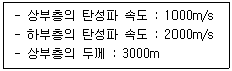
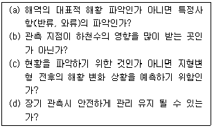

해양자원개발기사 (2010-05-09 기출문제)
1과목: 해양학개론
1. 퇴적물의 입도분석에서 입자의 크기가 0.004mm 이하의 것은 어떤 범주로 분류되는가?
- 가는 자갈
- 모래
- 실트
- 점토
(정답률: 알수없음)

2. 달과 지구와의 인력차에 의하여 일어나는 조석의 일반적인 주기는?
- 12시간
- 12시간 25분
- 24시간
- 24시간 50분
(정답률: 알수없음)
3. 대양에서 산소 최소층(Oxygen minimum layer)이 존재하는 수심은?
- 0~300m
- 500~1000m
- 1000~1500m
- 1500~2000m
(정답률: 알수없음)
4. 다음 중 망간단괴의 생성과 거리가 가장 먼 것 은?
- 수온
- 저층류
- 열수작용
- 퇴적물 조직 및 퇴적속도
(정답률: 알수없음)
5. 8월 북대서양에서 증발한 수증기는 무역풍에 의해 서쪽으로 운반되고, 파나마운하를 빠져나와 태평양에서 비가 되어 강하하게 된다. 그 결과 염분 변화는 어떠하겠는가?
- 북태평양의 염분이 북대서양에서보다 높다.
- 북태평양과 북대서양의 염분이 같다.
- 북대서양의 염분이 북태평양에서보다 높다.
- 북태평양과 북대서양의 염분 변화는 없다.
(정답률: 알수없음)
6. 대양저의 대부분을 차지하는 기반암은 주로 어떤 암석으로 되어 있는가?
- 안산암
- 현무암
- 화강암
- 조면암
(정답률: 알수없음)
7. 해양 내에서 수중음파의 전파에 가장 영향을 주지 않는 것은?
- 수온
- 염분
- 수압
- PH
(정답률: 알수없음)
8. 지형류란 어떤 힘들이 서로 평형을 이룰 때 나타나는 해류인가?
- 압력경도력과 코리올리힘
- 압력경도력과 바람응력
- 바람응력과 코리올리힘
- 가속력과 코리올리힘
(정답률: 알수없음)
9. 계절풍에 대한 설명으로 적합하지 않은 것은?
- 계절에 따라 바람의 방향이 바뀐다.
- 위도에 따른 태양복사 에너지의 차이 때문에 생긴다.
- 지구표면상의 대륙과 해양의 분포와 밀접하게 관련되어 있다.
- 아시아 대륙의 남쪽 및 남동 해상에서 현저하게 나타난다.
(정답률: 알수없음)
10. 대양저의 열류량에 대한 일반적인 양상 중 틀린 것은?
- 대서양 중앙해저 산맥에서는 높은 열류량을 나타낸다.
- 동태평양 해팽에서는 낮은 열류량을 나타낸다.
- 해구에서는 낮은 열류량을 나타낸다.
- 해저산맥의 측면을 따라 열류량이 작은 지역이 띠를 이룬다.
(정답률: 알수없음)
11. 대륙사면의 표면에 가장 많은 퇴적물은?
- 자갈
- 모래
- 실트
- 조개껍데기
(정답률: 알수없음)
12. 좁은 해협을 통하여 외양과 연결되는 만에서 증발량이 많을 경우 해협의 해수운동은?
- 전층에서 만으로 유입하는 운동
- 전층에서 외양으로 유출하는 운동
- 상층은 만으로 유입, 하층은 외양으로 유출
- 상층은 외양으로 유출, 하층은 만으로 유입
(정답률: 알수없음)
13. 우리나라 동해안의 경우 연안용승을 가장 잘 일으킬 수 있는 바람은?
- 동풍
- 서풍
- 남풍
- 북풍
(정답률: 알수없음)
14. 대기중의 용해되어 있는 화학 성분 중 온실효과로 인한 해수면의 상승과 다음 중 가장 관련이 깊은 것은?
- N2
- O2
- Ar
- CO2
(정답률: 알수없음)
15. 다음의 해수의 유용 화학물질 중 농도가 가장 높은 것은?
- Mg
- Ca
- K
- Br
(정답률: 알수없음)
16. 천해파(Shallow sea wave)의 파속(phase speed)과 수심과의 관계를 가장 올바르게 설명한 것은?
- 파속은 수심에 반비례한다.
- 파속은 수심의 제곱근에 비례한다.
- 파속은 수심에 정비례한다.
- 파속은 수심과 무관하다.
(정답률: 알수없음)
17. 정상해수(염분 35‰)가 어는 빙점은 -2℃이다. 해수의 염분이 증가할수록 해수의 빙점은?
- 내려간다.
- 올라간다.
- 어느 정도까지 내려갔다가 다시 올라간다.
- 변화가 없다
(정답률: 알수없음)
18. 북반구에서 취송류의 방향은 바람방향에 대하여 어떤 방향이 되는가?
- 오른쪽
- 왼쪽
- 동일한 방향
- 방향이 정반대
(정답률: 알수없음)
19. 석유생성 요인 설명으로 틀리는 것은?
- 수온 및 기후가 온난하여 유기물 생산력이 높아야 한다.
- 많은 유기물이 높은 퇴적률로 쌓인 후 산화환경을 이루어야 한다.
- 쌓인 유기물이 탄소와 수소성분만 남도록 적당한 온도와 높은 압력이 있어야 한다.
- 탄화수소가 집중되도록 공극률이 높은 암층이 있어야 하고 화산활동은 적을수록 좋다.
(정답률: 알수없음)
20. 관성류(inertial current)에 대한 설명 중 맞는 것은?(단 북반구라고 가정한다.)
- 시계방향의 원운동이다.
- 시계반대 방향의 타원운동이다.
- 바람과 같은 방향의 왕복운동이다.
- 고위도에서 저위도보다 주기가 크다.
(정답률: 알수없음)
2과목: 지질해양학
21. 저탁류(turbidity current)가 흔히 발달하는 곳은?
- 해빈
- 대륙붕
- 대륙사면의 협곡
- 조간대
(정답률: 알수없음)
22. 심해 퇴적물 중 우즈(ooze)는 생물기원입자가 몇 %이상 함유되어 있는 것을 말하는가?
- 10%미만
- 5%
- 15%미만
- 30%이상
(정답률: 알수없음)
23. 대륙붕 퇴적물의 특징은?
- 일반적으로 붕단에는 조립퇴적물이 우세하다.
- 주로 저탁류의 퇴적물이 분포한다.
- 청니, 녹니 등의 퇴적물 분포가 넓다.
- 해록석, 망간단괴 등의 산출이 많다.
(정답률: 알수없음)
24. 석유를 저류(貯溜)하는 지질구조 중에서 큰 유전이 발견될 수 있는 가장 좋은 구조는?
- 부정합형
- 암염형
- 초형(礁型)
- 트랩(trap)형
(정답률: 알수없음)
25. 현무암질 해양저 지각이 화강암질 마그마로 변하는 과정의 설명으로 가장 적절한 것은?
- 현무암의 맨틀 내에서 eclogite와 화강암질 마그마로 변한다.
- 현무암이 pyrolite와 화강암질 마그마로 변한다.
- 현무암이 해저퇴적물과 동시 용해되어 마그마로 변한다.
- 현무암이 해수와 결합, 변질되어 화강암질 마그마로 변한다.
(정답률: 알수없음)
26. 평균 간조선과 해안선(구성물질이나 지형적으로 차이를 보여주는 지역) 사이에 미고결 퇴적물이 쌓여있는 해양환경으로 가장 적합한 것은?
- 조간대
- 연안
- 연안사주
- 후안
(정답률: 알수없음)
27. 지층누중의 법칙과 가장 관련성이 높은 것은?
- 변성작용
- 퇴적작용
- 풍화작용
- 분출작용
(정답률: 알수없음)
28. 우리나라 서해안에 넓게 발달한 조간대는 과거 언제 이후에 발달한 것인가?
- 만년전 이후
- 이만년전 이후
- 오만년전 이후
- 십만년전 이후
(정답률: 알수없음)
29. 대조차(macrotidal) 퇴적환경에서의 조차 범위는?
- 0.5m 이하
- 0.5~1 m
- 1~2m
- 4m 이상
(정답률: 알수없음)
30. 해저징형의 주요 구성단위가 아닌 것은?
- 심해평원
- 대륙주변부
- 열점
- 중앙해령
(정답률: 알수없음)
31. 변환단층(transform fault)의 발달이 제일 적은 해저는?
- 홍해
- 대서양
- 인도양
- 태평양
(정답률: 알수없음)
32. 홀로세 해침의 과정을 반영한 예로 가장 적합한 것은?
- 대륙붕 퇴적물
- 심해저 퇴적물
- 대륙대 퇴적물
- 산호초
(정답률: 알수없음)
33. 대륙사면과 관련된 설명 중 틀린 것은?
- 대륙사면에서 저탁류가 일어나며, 저탁류란 물을 많이 함유한 퇴적물이 상대적으로 높은 밀도로 사면을 따라 하부로 흐르는 것을 말한다.
- 지각의 가벼운 진동이나 충격으로 저탁류가 발생되면 자동적인 부유작용이 적용되면서 아래로 흐른다.
- 대륙사면은 해저에서 대륙지각과 대양저 지각을 구분하는 경계구분이다.
- 대륙사면의 퇴적물은 60% 정도가 모래이다.
(정답률: 알수없음)
34. 다음 중 분급도가 가장 좋은 퇴적물은?
- 사질과 이질이 절반씩 혼합되어 있다.
- 사질이 이질에 비하여 약간 많은 함량이다.
- 이질이 사질에 비하여 약간 많은 함량이다.
- 주로 사질로 구성되어 있다.
(정답률: 알수없음)
35. 지진이 발생하지 않는 지각하부의 깊이는?
- 약 700 km이하
- 약 450~300 km
- 약 300~250km
- 약 250~100km
(정답률: 알수없음)
36. 하구역 수괴혼합의 특성에 따른 설명으로 옳지 않은 것은?
- 수괴혼합이 활발한 경우 완전혼합형 강하구가 형성된다.
- 수괴혼합이 미약한 경우 염쐐기형 강하구가 형성된다.
- 조석이 우세한 경우 완전혼합형이 우세하다.
- 염쐐기형 강하구의 경우 염분구조는 수직적으로 균질하고 수평적으로 변화한다.
(정답률: 알수없음)
37. 다음 중 사질퇴적물을 채취하는 가장 좋은 기구는?
- Dredge
- Piston corer
- Gravity corer
- Vibratory corer
(정답률: 알수없음)
38. 해저확장설의 증거로서 적합하지 않은 것은?
- 해저산맥에서 멀어질수록 연령이 증가한다.
- 해저산맥에서 멀어질수록 퇴적 두께가 감소한다.
- 자기 이상대가 해저산맥을 중심으로 대칭적으로 나타난다.
- 변환 단층대를 따라 지진대가 분포한다.
(정답률: 알수없음)
39. 육성퇴적물의 퇴적상태와 비교할 때 심해성 퇴적물의 특징이 아닌 것은?
- 적도 부근의 심해성 퇴적물은 생물기원 퇴적물이 많다
- 퇴적층의 연속성이 양호하며, 퇴적물의 침전속도가 대단히 느리다.
- 해구 주변지역에 국한되어 분포한다.
- 해저 지형에 따라서 균일하게 피복하여 분포한다.
(정답률: 알수없음)
40. 대양은 중앙해령 또는 대양저산맥에서 해저가 확장되면서 형성되는데 중앙해령에서 해저가 확장되면서 형성된 암석층은?
- turbidite
- ophiolite
- oolite
- pyrite
(정답률: 알수없음)
3과목: 광물학
41. 해저열수분출구 주변에는 다금속의 유화광상이 형성되기도 한다. 이러한 해저열수광상 개발로 얻을 수 있는 주요 금속 원소는?
- 구리, 아연
- 알루미늄, 텅스텐
- 백금, 저어콘
- 망간, 마그네슘
(정답률: 알수없음)
42. 가스와 원유사이의 점이적인 상태의 탄화수소이며, 지하조건에서는 가스이지만, 지표상에서는 액체로 응축하는 탄화수소를 무엇이라고 하는가?
- 가스 하이드레이트
- 콘덴세이트
- 케로진
- 천연가스
(정답률: 알수없음)
43. 다음 중 불순물의 존재 때문에 색을 띠는 타색광물에 해당하는 것은?
- 감람석
- 휘석
- 각섬석
- 석영
(정답률: 알수없음)
44. 방해석을 묽은 아리자린 레드 에스(Alizarine red S) 염료를 이용 반응시켰을 때 어떤 색으로 변하는가?
- 청색
- 적색
- 녹색
- 황색
(정답률: 알수없음)
45. 석유의 집유 구조에 속하지 않는 것은?
- 화강암 트랩
- 배사구조 트랩
- 단층 트랩
- 층서 트랩
(정답률: 알수없음)
46. 망간단괴를 구성하는 망간 이외의 주요광물 성분은?
- 탄산염광물
- 철수산화물
- 인산염산화물
- 황산염광물
(정답률: 알수없음)
47. 해양에서 개발될 수 있는 광물자원으로 가장 거리가 먼 것은?
- 구리
- 보크사이트
- 금
- 니켈
(정답률: 알수없음)
48. 다음 중 동질이상의 관계로 맞는 것은?
- 방해석과 백운석
- 아라고나이트와 방해석
- 황철석과 황동석
- 규선석과 헤덴버자이트
(정답률: 알수없음)
49. 다음 중 유사한 적층구조를 갖는 점토광물로 연결된 것은?
- 질석- 스멕타이트
- 캐올리나이트- 할로이사이트
- 녹니석- 할로이사이트
- 일라이트 - 캐올리나이트
(정답률: 알수없음)
50. 다음 중 해저광물 중 세륨(Ce), 토륨(Th)의 원료광물이 되는 것은?
- 저어콘
- 석류석
- 티탄철석
- 모나자이트
(정답률: 알수없음)
51. 광물의 분리법 중 중광물의 분리에 가장 효과적인 방법은?
- 핀세트 분리법
- 자력 분리법
- 부유 선광법
- 중액 분리법
(정답률: 알수없음)
52. 다음 중 망간단괴에 대한 설명으로 옳지 않은 것은?
- 철-망간산화물이 다양한 종류의 동심원상으로 성장, 발달하는 광물괴이다.
- 적점토가 퇴적하는 지역과 느린 퇴적작용으로 형성되는 규질연니질 퇴적물이 퇴적되는 지역에서 많이 생성된다.
- 수심 800~2400m의 해산(seamounts)의 사면에서 주로 생성된다.
- 망간단괴의 기원은 해양성, 속성, 열수, 화산기원으로 분류할 수 있다.
(정답률: 알수없음)
53. 미국석유협회가 석유의 비중을 나타내기 위해 제정한 비중표시법으로 원유를 분류할 때 사용하는 단위는?
- NPI°
- APO°
- AMD°
- API°
(정답률: 알수없음)
54. 다음 ( )안에 알맞은 내용은?

- 층상구조
- 환형구조
- 3차원 망상구조
- 복사면체형구조
(정답률: 알수없음)
55. 다음 중 해록석에 과한 설명으로 옳지 않은 것은?
- 퇴적속도가 느린 곳에서 형성된다.
- 대륙사면 또는 천해지역에서 발견된다
- 녹색을 띠는 직경 5mm 정도의 입자로 내부구조가 잘 발달되어 있다.
- 해수로부터 직접 침전되는 자생의 층상 규산염 광물이다.
(정답률: 알수없음)
56. 쇄설성 조립질 퇴적물 중 중광물로만 이루어진 광물군은?
- 자철석- 석역- 흑운모
- 저어콘- 모나자이트- 티탄철석
- 전기석- 석류석- 몬모릴로나이트
- 모나자이트- 자철석- 미사장석
(정답률: 알수없음)
57. 육성기원물질로 구성된 해저 퇴적물과 관계없는 것은?
- 어란석
- 석영
- 운모
- 장석
(정답률: 알수없음)
58. 해빈퇴적물에 농집되어 있을 수 있는 표사광물로 볼 수 없는 것은?
- 금
- 석석
- 자철석
- 백류석
(정답률: 알수없음)
59. 다음 중 인회석에 대한 설명으로 옳지 않은 것은?
- 인산염 광물로 육방정계의 결정계를 갖는다.
- 경도가 4이고, 비중은 6.7~7.0인 중광물이다.
- 조흔색은 백색이고, 지방광택을 보인다.
- 정마그마광상, 열수광상 등에서 산출된다.
(정답률: 알수없음)
60. 해수에서 산화전위(Eh)의 증가에 따른 철화합물의 일반적인 침전형태는?
- 철유화물 → 철탄산염 → 철수산화물
- 철탄산염 → 철유화물 → 철수산화물
- 철수산화물 → 철유화물 → 철탄산염
- 철유화물 → 철수산화물→ 철탄산염
(정답률: 알수없음)
4과목: 탐사공학
61. 석유 시추에 사용하는 이수의 주성분은 물과 무엇인가?
- 고령토
- 벤토나이트
- 불석
- 석회석
(정답률: 알수없음)
62. 다음의 비폭발성 에너지원 중 해상 탐사용이 아닌 것은?
- 에어건
- 웨이트 드롭
- 베이퍼쇽
- 스파커
(정답률: 알수없음)
63. 암석이 약한 외부 자기장일지라도 오랫동안 영향을 받아서 잔류자기를 띠게 되는 현상을 무엇이라 하는가?
- 점성 잔류자화
- 화학 잔류자화
- 열 잔류자화
- 퇴적 잔쥬자화
(정답률: 알수없음)
64. 다음 중 자기장 강도의 단위로 사용되지 않는 것은?
- Oe(Oersted)
- γ(gamma)
- T(tesla)
- P(poise)
(정답률: 알수없음)
65. 중성자 검층을 통해 측정할 수 있는 지층의 정보는?
- 전기비저항
- 자화강도
- 음파속도
- 공극률
(정답률: 알수없음)
66. 래터럴 전기비저항 검층은 어떤 전극배열을 사용하는가?
- 1극법 배열
- 2극법 배열
- 3극법 배열
- 4극법 배열
(정답률: 알수없음)
67. 발파점이 수중 또는 지표면 아래에 위치하는 경우 에너지의 일부가 상향으로 올라와 표면에 반사되어 나타나는 것은?
- 고스트
- 페그레그
- 반향파
- 인터베드
(정답률: 알수없음)
68. 우리나라의 지자기장의 크기는 일반적으로 어느 정도인가?
- 30,000γ
- 40,000γ
- 50,000γ
- 60,000γ
(정답률: 알수없음)
69. 수평 2층 구조에서 굴절법 탄성법탐사를 실시하여 아래의사항을 확인하였다. 교차거리를 구하면 얼마인가?

- 5.23km
- 8.56km
- 10.39km
- 12.11km
(정답률: 알수없음)
70. 부게 보정에 대한 설명으로 옳지 않은 것은?
- 측정지점이 기준면보다 고도가 낮으면 보정값을 측정 중력치에서 빼준다.
- 측정지점과 기준면 사이에 존재하는 물질의 인력에 의하여 나타나는 중력의 차이를 보정하여 주는 것이다.
- 보정값은 0.04193 ρ ㆍ h로 계산한다. 여기서 ρ는 암석밀도이고, h는 고도차이다.
- 부게 보정은 프리에어 보정과 부호가 반대이며 이 둘을 합하여 고도 보정이라 한다.
(정답률: 알수없음)
71. 두 지점 간을 전파하는 탄성파는 최단 주시를 갖는 파선의 경로를 따라 전파된다는 원리 또는 법칙을 무엇이라 하는가?
- 페르마의 원리
- 호이겐스의 원리
- 스넬의 법칙
- 패러데이 법칙
(정답률: 알수없음)
72. 중력탐사에서 에트뵈스 효과를 고려하지 않아도 되는 경우는?
- 선상중력계로 남북방향으로 항해하면서 측정할 경우
- 선상중력계로 동성방향으로 항해하면서 측정할 경우
- 항공기를 이용한 중력측정의 경우
- 해저에 설치된 중력계로 측정할 경우
(정답률: 알수없음)
73. 밀도 검층은 다음 중 어떤 검층법에 속하는가?
- 전기 검층법
- 방사능 검층법
- 자력 검층법
- 음파 검층법
(정답률: 알수없음)
74. 탄성파 중 실체파인 S파가 매질을 통과할 때매질 내 입자의 운동방향은?
- S파의 진행방향과 직각인 방향이다.
- S파의 진행방향과 평행인 방향이다.
- S파의 진행방향과 타원역행 방향이다.
- S파의 진행방향과 45° 방향이다.
(정답률: 알수없음)
75. 탄성파 탐사 자료를 통하여 탄화수소 가스층의 부존 가능성을 직접 예측하는 증거로 볼 수 없는 것은?
- 명점
- 극성 역전
- 타임 새그
- 보 타이
(정답률: 알수없음)
76. 진공에서이 투자율 μ(H/m)의 값은?
- π × 10-7
- 2π × 10-7
- 3π × 10-7
- 4π × 10-7
(정답률: 알수없음)
77. 지자기장의 복각(I), 수평성분(H) 및 수직성분(Z)간의 관계로 맞는 것은?
- sin I = Z/H
- cos I = Z/H
- tan I = Z/H
- cot I = Z/H
(정답률: 알수없음)
78. 탄성파 탐사의 디지털 자료에 있어 측점시간 간격이 4ms 이면 나이퀴스트 주파수는?
- 500Hz
- 250Hz
- 125Hz
- 100Hz
(정답률: 알수없음)
79. 반사법 탄성파탐사의 자료처리 과정 중 CDP중합을 시행하기 이전의 필수 처리단계가 아닌 것은?
- 구조보정
- CDP모음(취합)
- NMO보정
- 속도분석
(정답률: 알수없음)
80. 밀도가 2.5 g/cm3 영률이 0.4×1011 N/m2, 포아송비가 0.11 인 균질 암석층에서의 P파의 속도는?
- 4⑤6 m/s
- 3512 m/s
- 1863 m/s
- 1282 m/s
(정답률: 알수없음)
5과목: 해양계측학
81. 육상 혹은 해상에서 위치를 측정하는 방법 중 위성을 이용하는 것은?
- Loran
- Rader
- Trisponder
- GPS
(정답률: 알수없음)
82. 다음 중 파장이 가장 긴 전자파는?
- X선
- 자외선
- 가시광선
- 적외선
(정답률: 알수없음)
83. 퇴적물 입도가 32㎛인 경우 파이(ø) 값은?
- 4
- 5
- 6
- 7
(정답률: 알수없음)
84. 바다에서 투명도를 측정하기 위한 백색원판(Secchi disk)을 제작할 때 직경으로 가장 적합한 것은?
- 15cm
- 30cm
- 50cm
- 8cm
(정답률: 알수없음)
85. 바다에서 조립질 입자의 입도 분석에 사용되는 기기와 가장 거리가 먼 것은?
- 기계식 요동기(Ro-Tap)
- Air- Jet Sieve
- Rapid Sediment Analyer
- Pycnometer
(정답률: 알수없음)
86. 다음 중 GEK 해류계를 이용하는데 가장 적합하지 않은 지구상의 위치는?
- 지자기 적도 부근
- 지자기 30° 부근
- 지자기 60° 부근
- 지자기 극 부근
(정답률: 알수없음)
87. 깊은 곳과 얕은 곳에서 채취한 두 개의 해수시료의 온위가 같았을 때 이 두개 해수의 현장온도는?
- 깊은 곳의 것이 더 높다.
- 얕은 곳의 것이 더 높다.
- 양쪽이 같다.
- 환경(온도, 염분, 깊이)에 따라 다르다.
(정답률: 알수없음)
88. 유의파고란?
- 파군(wave train) 중 가장 큰 파의 파고
- 모든 파랑의 파고를 평균한 것
- 파군 중 파고가 큰 1/3 파의 평균파고
- 파군 중 파고가 큰 1/10 파의 평균파고
(정답률: 알수없음)
89. 외양역에서 주 온도약층해수의 연직혼합 과정의 추적자로서 부적합한 방사성핵종은?
- 226Ra
- 90Sr
- 14C
- 3H
(정답률: 알수없음)
90. 퇴적물 분석 중, Pipette나 Sedigraph는 어디에 사용되는 것인가?
- 조립질 시료의 입도분석
- 세립질 시료의 입도분석
- 조립질 시료의 중량 측정
- 세립질 시료의 중량 측정
(정답률: 알수없음)
91. 유속 관측 지점을 선정할 때의 고려해야 될 사항과 가장 거리가 먼 것은?

- (a)
- (b)
- (c)
- (d)
(정답률: 알수없음)
92. 위성 원격탐사의 장점이 옳게 설명된 것은?
- 전자파를 이용하므로 매우 정밀한 분석을 할 수 있다.
- 비용이 많이 드나 원하는 지역과 시기릐 자료를 쉽게 구할 수 있다.
- 광범위한 지역을 동시에 탐사가 가능하며 사용위성에 따라서는 한반도를 동시에도 관찰할 수 있다.
- 기상의 영향을 받지 않으며, 원하는 지점 및 시기의 연속적인 관측이 쉽다.
(정답률: 알수없음)
93. 다음 중 시추한 해저 퇴적물의 구조를 관찰하는데 가장 적합한 기기는?
- 연 엑스선장치
- 감마선 감쇄장치
- 편광 현미경
- 전자 주사현미경
(정답률: 알수없음)
94. 조석자료의 분석에서 잔여치가 조석과 비슷한 주기의 Oscillation을 보이는 경우에 대한 설명으로 틀린 것은?
- 조석의 각 분조를 분리해 내기에 관측자료의 길이가 길다,
- 추출해내는 분조의 선택이 잘못되어 현재의 조화분석으로는 조석성분을 충분히 추출해내지 못했다.
- 관측 자료상의 시간 오차가 있다.
- 조석계의 시계작동이 불량하다.
(정답률: 알수없음)
95. 수온- 염분도표로부터 알 수 없는 것은?
- 심층해수 순화
- 수직 안정도
- 수과의 혼합
- 대기나 해저에 의한 수괴의 변질
(정답률: 알수없음)
96. Sand 나 Silt 또는 이들이 혼합된 퇴적물을 많이 채취할 때 사용되는 채니기로 가장 적합한 것은?
- Ekman type sampler
- Dredge
- Core smapler
- Sigsbee sampler
(정답률: 알수없음)
97. 해저 지형 조사 시 사용되는 장비와 가장 거리가 먼 것은?
- Multi beam echosounder
- DGPS
- Side scanning sonar
- Thermal scanner
(정답률: 알수없음)
98. 원격탐사에서 해류나 조석 등 해면의 기복 연구에 많이 이용되는 전자파는?
- X선
- 자외선
- 가시광선
- 마이크로파
(정답률: 알수없음)
99. 세계기상기구(WMO)에서 지정한 파랑관측 코드는 몇 등급인가?
- 5
- 10
- 15
- 20
(정답률: 알수없음)
100. 조위관측에서 압력식 검조기를 사용하여 얻어진 압력자료 중 제일 먼저 제거해 주어야 할 것은?
- 대기압
- 풍압
- 파랑의 영향
- 평균해면
(정답률: 알수없음)